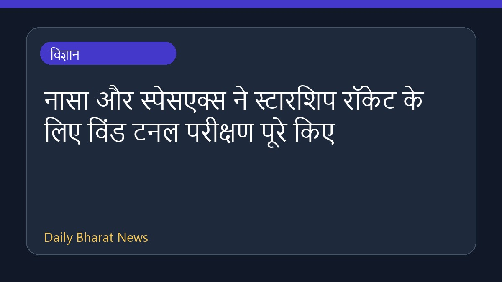

नासा और स्पेसएक्स ने स्टारशिप रॉकेट के लिए विंड टनल परीक्षण पूरे किए

आगामी आर्टेमिस III मिशन की तैयारी के तहत, नासा और उसके उद्योग साझीदारों ने स्पेसएक्स के सुपर हेवी वर्जन 3 रॉकेट बूस्टर पर नए विंड टनल परीक्षण पूरे कर लिए हैं। कैलिफोर्निया में नासा के एम्स रिसर्च सेंटर में किए गए इन परीक्षणों का मुख्य उद्देश्य पुन: प्रवेश के दौरान रॉकेट को झेलनी पड़ने वाली अत्यधिक वायुगतिकीय ताकतों को बेहतर ढंग से समझना था। ये परीक्षण अगले साल होने वाले प्रदर्शन मिशन की तैयारियों का एक महत्वपूर्ण हिस्सा हैं।
मूल स्रोत: NASA
NASA, SpaceX Advance Wind Tunnel Tests for Starship Rocket ↗
NASA, SpaceX Advance Wind Tunnel Tests for Starship Rocket ↗